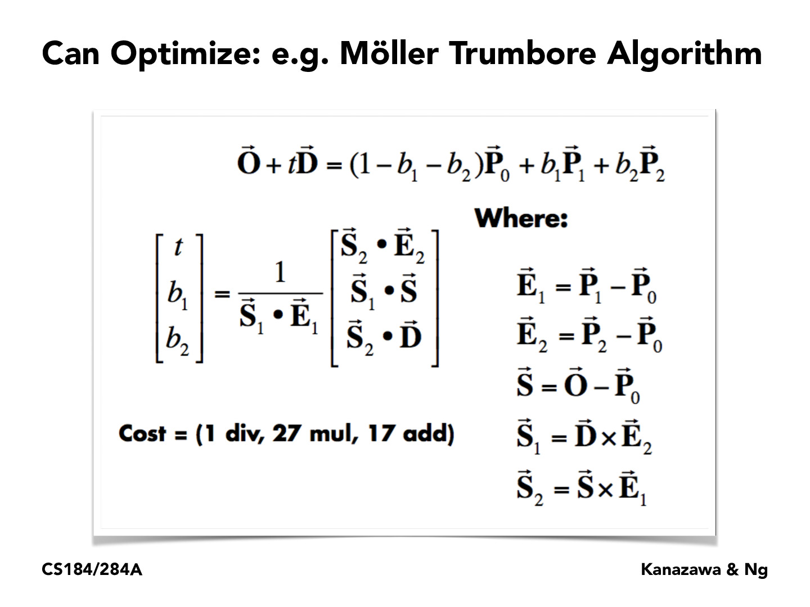
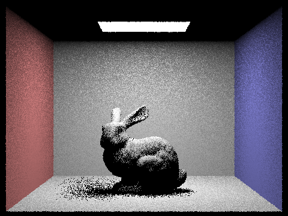
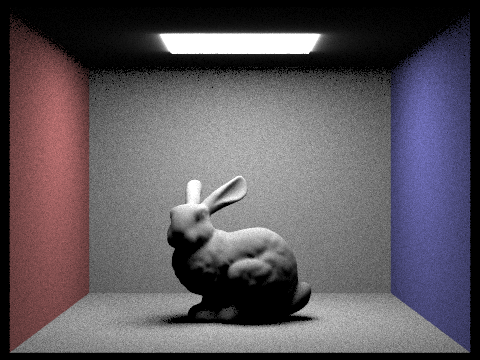
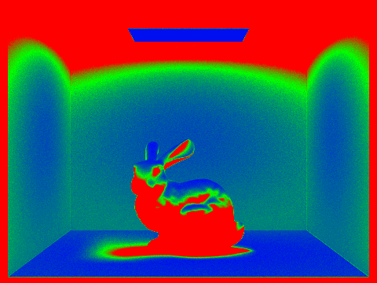

In this project, I implemented some algorithms that make ray tracing realistic and efficient.
First, I implemented a ray generation routine that starts with input coordinates from the image space.
and generates a ray with coordinates in the world space.
Also, I implemented the ray-intersection routines for two types of primitives: spheres and triangles.
Second, I build BVH with surface area heuristic (SAH) to speed up the rendering process.
Then I implemented direct/indirect lighting
and multiple bounces of lighting with Russian Roulette to achieve global illumination.
Finally, I implemented an adaptive sampling feature so the program can intelligently decide when to stop sampling.
Part 1: Ray Generation and Intersection
Walk through the ray generation and primitive intersection parts of the rendering pipeline:
Ray generation:
Camera::generate_ray(...) in src/pathtracer/camera.cppFirst, I added a -0.5 offset to both x and y to align the coordinates with the z-axis.
Second, I converted (x,y) from the image space to the camera space based on the converting rule in the spec.
Third, I initialized the direction vector of the ray to be Vector3D d(x, y, -1); And then I multipied it by c2w and normalized it to get a normal vector in the world space. With the origin "pos" and the direction "d", I got the Ray r(pos, d).
Finally, after setting r.min_t and r.max_t to nClip and fClip respectively, I returned "r" as the generated ray.
PathTracer::raytrace_pixel(...) in src/pathtracer/pathtracer.cpp.
In this function, I made a loop that generates num_samples camera rays and traces them through the scene using est_radiance_global_illumination(), and update the pixel in the sampleBuffer with the averaged radiance, and update the sampleCountBuffer with the number of samples we made (which is num_samples in this case).
Triangle Primitive intersection:
Triangle::has_intersection(...) and Triangle::intersect(...) in src/scene/triangle.cpp.I implemented Moller-Trumbore Algotithm to get the intersection time and the barycentric coordinates of the intersection point.
Then, to test if there is an intersection between the triangle and the ray, I checked the time is within min_t and max_t of the ray and all the three barycentric coordinates are between 0 and 1.
If all the conditions are met, the intersection is valid.
In Triangle::intersect(...), I also updated the t, n, promitive, and bsdf of the input Intersection *isect with the information of the nearest intersection I just found.
Sphere Primitive intersection:
Sphere::has_intersection(...) and Sphere::intersect(...) in src/scene/sphere.cppI plugged the ray equation into the sphere equation to get a quadratic equation of the intersection time t.
Then I solved the equation to get two solutions of t in terms of the center and radius of the sphere and the origin and direction of the ray.
Finally, if one of the solutions is between min_t and max_t of the ray, there is a valid intersection. Simillar to the triangle intersection, in Sphere::intersect(...), I updated the t, n, promitive, and bsdf of the input Intersection *isect with the information of the nearest intersection.
|

|
|
Explain the triangle intersection algorithm you implemented in your own words.
Moller-Trumbore Algotithm is an optimized algorighthm for ray-triangle intersection check.
To derive the formula for this algorithm, I started with the basic ray-plane intersection check.
Then I used Cramer's Rule to rearrange the terms in the equation and got the final equation for Moller-Trumbore.
The detailed steps is included in the image below.
|
|
Show images with normal shading for a few small .dae files.

|

|

|

|
Part 2: Bounding Volume Hierarchy
Walk through your BVH construction algorithm. Explain the heuristic you chose for picking the splitting point.
BVHAccel:construct_bvh(...) inside src/scene/bvh.cpp
First, I created a bbox for the BVH.
For all primitives in this node from "start" to "end",
I expanded the bbox to include them.
Then I created a BVHNode with the expanded bbox,
and calculated the total number of primitives in the node as end - start.
If the node contains less than max_leaf_size primitives, I considered it as a leaf node.
I set the l and r of the node to be null since leaf node does not have any child,
and set the start and end to be the input start and end, and then just return the node.
If the node contains more than max_leaf_size primitives, it is an interior node.
In this case, I need to split the primitives into left and right and construct children nodes with them.
I implemented Surface Area Heuristic to determine the axis to split
and compare the centroid of each primitive with the average centroid along that axis.
First, I calculated the average centroid of all the primitives as a Vector3D avg_centroid.
Then for each axis 0, 1, and 2, for each primitive p,
if (*p)->get_bbox().centroid()[curr_axis] <= avg_centroid[curr_axis],
then I put p into the left primitives.
else, I put it into the right primives.
After I processed all the primitives, I expanded two bbox for left and right child.
Then I calculate the current heuristic as
surface_area(left) * triangle_count(left) + surface_area(right) * triangle_count(right).
Along the axis with the smallest surface area heuristic,
I divide the primitives into left and right group,
and used for loops to set the correct pointer of the new start and end primitive iterator for left and right child.
Finally, I called construct_bvh recursively to construct the left and right child of the current node.
Show images with normal shading for a few large .dae files that you can only render with BVH acceleration.
|
|
|
Compare rendering times on a few scenes with moderately complex geometries with and without BVH acceleration.
Present your results in a one-paragraph analysis.
The cow scene takes 50 seconds without BVH, but only takes 0.13 seconds using BVH.
The maxplanck takes about 90 seconds without BVH and 0.3 seconds with BVH.
The CBlucy takes about 2 seconds with BVH.
BVH allows the ray to selectively test against a subset of the scene
instead of the whole scene with every primitive.
At each step of the BVH traversal, if the ray does not intersect the bounding the box of the current node,
the whole node is ignored.
Afer implementing BVH, the runtime decreased from O(n) to O(log(n)).
Part 3: Bounding Volume Hierarchy
Walk through both implementations of the direct lighting function.
Uniform Random Sampling:
First, generate a random sample from hemisphereSampler and convert it into the world space. (wi)Then, generate the next ray by hit_p and wi and set the min_t to be EPS_D.(next)
Create an Intersection i.
If cos_theta(wi) is positive and bvh->intersect(next, &i), increase L_out by (BSDF of the current point) * (emission from the light) * (Lambert’s cos_theta(wi)) * (inverse pdf 2.0 * PI).
Finally, divide L_out by number of samples and return it.
Importance Sampling Lights:
For each light in the scene, first check if it is a point light.If it is, set num_samples to be 1; otherwise set num_samples to be ns_area_light.
for each of the num_samples samples, pick an angle using light->sample_L,
then if the light is not behind the primitive, create the next ray and set min_t = EPS_D and next.max_t = distToLight - EPS_F.
Then create an Intersection i and if !bvh->intersect(next, &i), there is no occlusion between the light and the primitive, so I could increate L_curr_light by l * isect.bsdf->f(w_out, w2owi) * cos_theta(w2owi) / pdf.
After the inner for loop ends, add L_curr_light/num_samples to L_out.
And finally, return L_out.
Show some images rendered with both implementations of the direct lighting function.
|
|

|
|

|
|
Focus on one particular scene with at least one area light and compare the noise levels in soft shadows when rendering with 1, 4, 16, and 64 light rays (the -l flag) and with 1 sample per pixel (the -s flag) using light sampling, not uniform hemisphere sampling.
When the number of light rays increases, the noise becomes less and less.
By generating more light rays and averaging the results,
we could get a better estimate of the actual amount of the light.
|
|
|
|
|
|
Compare the results between uniform hemisphere sampling and lighting sampling in a one-paragraph analysis.
When using the same number of samples, importance light sampling results in less noise than uniform hemisphere sampling.
If we increase the number of samples, uniform hemisphere sampling can have less noise but needs much more time to render.
Importance light sampling can achieve less noise more efficiently.
Part 4: Global Illumination
Walk through your implementation of the indirect lighting function.
In PathTracer::at_least_one_bounce_radiance, I first add one_bounce_radiance(r, isect) to L_out
and then check if I shoud continue.
I initialized the Russian Roulette termination probability to be 0.35
and continuation probability to be 1-0.35.
If coin_flip(p_continue) is true, I continue; otherwise I just return L_out.
If I continue, I generate the bsdf and cos_theta similarly to part 3,
and then create the next ray with depth decreased by 1 and min_t equals to EPS_D.
If the depth of the next ray is greater than 1 && cos_theta is positive && bvh->intersect(next, &i),
I increase L_out by at_least_one_bounce_radiance(next, i) * bsdf * cos_theta / pdf / p_continue,
calling this function recursively; otherwise, I return L_out.
In PathTracer::est_radiance_global_illumination,
I add at_least_one_bounce_radiance(r, isect) to L_out before return it.
Show some images rendered with global (direct and indirect) illumination. Use 1024 samples per pixel.
|
|
|
Pick one scene and compare rendered views first with only direct illumination, then only indirect illumination. Use 1024 samples per pixel. (You will have to edit PathTracer::at_least_one_bounce_radiance(...) in your code to generate these views.)

|
|
For CBbunny.dae, compare rendered views with max_ray_depth set to 0, 1, 2, 3, and 100 (the -m flag). Use 1024 samples per pixel.
|
|
|
|
|
|
|
|
Pick one scene and compare rendered views with various sample-per-pixel rates, including at least 1, 2, 4, 8, 16, 64, and 1024. Use 4 light rays.
As the number of sample per pixel increases, the noise in the rendered image is reducing.
|
|
|
|
|
|
|
|
|
|
|
Part 5: Adaptive Sampling
Walk through your implementation of the adaptive sampling.
When I iterate through all the samples in a for loop, I add 1 to batchSize and n,
and check whether batchSize equals to samplesPerBatch.
if batchSize equals to samplesPerBatch, I reset batchSize to be 0 and
calculate I = 1.96 * std::sqrt(var) / std::sqrt(n). If I is less than maxTolerance * mean,
stop sampling and return; otherwise continue calculating the global illuminace and update
radiance and s1 and s2.
Pick one scene and render it with at least 2048 samples per pixel. Show a good sampling rate image with clearly visible differences in sampling rate over various regions and pixels. Include both your sample rate image, which shows your how your adaptive sampling changes depending on which part of the image you are rendering, and your noise-free rendered result. Use 1 sample per light and at least 5 for max ray depth.
./pathtracer -t 8 -s 2048 -a 64 0.05 -l 1 -m 5 -r 480 360 -f bunny.png ../dae/sky/CBbunny.dae
|  |